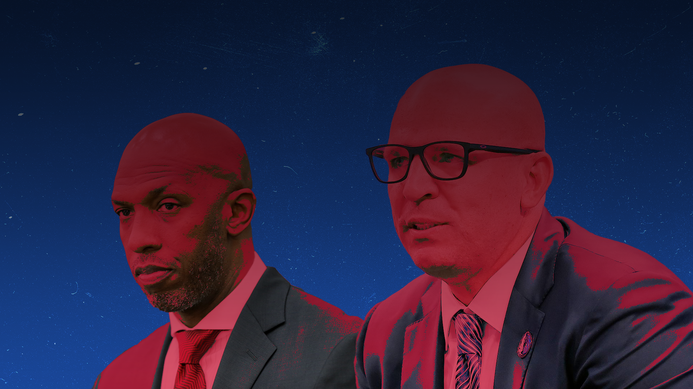

The NBA has a women problem
Content warning: domestic violence
The NBA has spent a lot of time and money promoting gender equality, but when teams hire abusers to lead them, does it really matter? Alessio Conte digs deeper to shine the spotlight on the NBA’s failings.
Sean Carroll illustation
The NBA has a women issue... and it might not be what you think it is.
The NBA is widely viewed as one of the most progressive and socially conscious sports leagues on the planet. But they, like most other leagues, have a lot of work to do in regards to perception of women and from women.
It is no secret that the NBA is pumping a significant amount of money into the WNBA. They promote the league and its players, host mid-season tournaments and cross-promote the league with the NBA men's season. The NBA is committed to the success of its women's league and its eventual self-sustainability and success.
The issue is not whether women have a platform to play, speak and earn for themselves. Rather, it is the hidden messages that all major sports leagues send to women that the NBA needs to begin stamping out.
The message is simple: famous people get away with doing way more bad shit than normal people. There are a few examples from other sports that illustrate this.
Richmond Tigers head coach Damian Hardwick delivered a rousing speech to his team during the AFL bubble in 2020. He reminded them about how they need to remember that they are playing for everyone back home (in locked down Victoria). The tear-jerking speech centred around family and supporters and made headlines for its inspirational qualities, until Hardwick was found to be cheating on his wife with a club staffer.
Hardwick went on to win the 2020 Premiership and is still heralded as a hero by many to this day.
On the darker side, is Greg Hardy. Then of the Carolina Panthers in the NFL, Hardy was arrested for assaulting his partner. He choked her and shoved her onto a bed full of loaded guns.
Hardy was immediately dropped by the Panthers, and then picked up by the Dallas Cowboys, a team known for cycling through players with severe personality and criminal issues. The league originally suspended him for ten games, then reduced his ban to four games, and he was then out of the league by the end of the season.
Hardy now fights for the UFC, another sports league that will do anything to drum up pay-per-views. This granted Hardy another excellent money making opportunity, with the sickening use of his past to sell tickets considering the lack of remorse shown by the man and lack of care shown by the UFC.
Hardwick is too talented at his job to be fired for not breaking the law, but cheating on your wife does not scream ‘leadership’ to me. Hardy, on the other hand, deserves no public spotlight whatsoever, especially since he has shown no effort to reform.
The NBA landscape, unfortunately, is not very different, and the 2021 offseason proved to be a step backwards for the league.
When the Black Lives Matter protests began taking off all around the world, the NBA and its players were at the forefront of controlling the narrative and speaking their truth. All parties involved were applauded for their commitment to social justice, to the point where the Milwaukee Bucks boycotted a game and temporarily suspended the bubble to protest the police shooting of Jacob Blake, yet another black male victim at the hands of the police.
It is now time that the NBA starts to transition this commitment to other aspects of social justice.
There were eight head coaching vacancies in the most recent NBA offseason, and seven of the new hires are black or minorities. A bevy of black head coaches are getting their first opportunity at the top job, a welcome change compared to the reality of the past few offseasons and overall history of the NBA.
But there were two coaching hires that made more news than others.
Both the Dallas Mavericks and Portland Trail Blazers did the regular coach hiring tango, wining and dining several high quality targets while knowing full well who they were going to hire the entire time.
The Trail Blazers brought in long-time San Antonio Spurs assistant coach Becky Hammon for an interview, a favourite move by all franchises that seek to look progressive. Hammon’s name has been thrown around in coaching rumours for several offseasons now. Despite the fact that she is talented and experienced enough for at least an opportunity, it seems she has been relegated to just being a pawn in NBA franchises’ coach-hiring chess. Hammon spoke about being used for image purposes:
"Please don't hire me to check a box. That's the worst thing you can do for me," Hammon tells ESPN. "Hire me because of my skill sets and coaching, who am I as a person, hire me for those."
Instead of hiring Hammon, or any other candidates, the Trail Blazers decided to hire former NBA champion and probable future Hall of Famer, Chauncey Billups. The move makes sense on face value. Billups played in the league for 17 successful years and has even spent some time in front offices studying the game from behind the scenes. However, there is a forgotten past to Billups that has recently been revived.
In 1997, Billups and several teammates allegedly raped a young woman. The two parties settled the case in civil court and the story was swept under the rug until recently being brought back into the spotlight by concerned citizens from the city of Portland and others around the NBA.
If you can stomach it, feel free to read what allegedly occurred on that night in 1997.
If you’d prefer not to, I will allow my partner to sum it up for you. After I detailed the case, she simply responded:
“How the f*** does he have a job?”
Sexual assault survivors across Portland and the world were furious that such a man could be hired for such a lucrative job, but maybe he had reformed. During an introductory press conference, reporters were able to question Billups about his potential reform and how he has grown since the incident. When posed with a question regarding the situation, Billups began to answer before a member of the Trail Blazers PR team stepped in and said that Billups would not be answering any questions on the topic.
Whether they were hiding a gruesome truth or shielding Billups from slipping up, the Blazers shot themselves in the foot when not allowing him to respond. This was his opportunity to prove that he had changed, and now it all looks like one big ruse.
Due to the nature of the settlement, the NBA cannot block such a hiring. If the Blazers were willing to push through the negative PR that came with such a move, all power to them, as it is a grey area that has no precedent.
Dallas, on the other hand, decided to hire Jason Kidd, one of the few interviewees for the Trail Blazers vacancy. Kidd was originally viewed as the favourite for the Portland job, however he withdrew his name once he was publicly linked to the job.
Why does any of this matter? Because Kidd is a convicted domestic abuser. He was arrested for hitting his wife during a disagreement with her in 2001.
The Dallas Mavericks are by no means victims either in this situation. Members of the front office have been accused of sexual assault, the team has been found out covering up allegations and this has happened several times over. They claimed to implement culture changing decisions across the franchise in 2018 after the initial findings of their misconduct, however a team executive was alleged to perform acts of sexual misconduct again in 2019.
To summarise, the Mavericks have proven time and time again to be systematically misogynistic.
Kidd has also had two failed attempts at the top job prior to being hired by the Mavericks in 2021. His tenure in both Brooklyn and Milwaukee left both franchises with an incredibly sour taste in their mouths. Kidd has been known to emotionally abuse his players and play mental games with both players and staff members.
So why on earth is he getting a third chance? This is a lot more cut and dry than the Billups situation. Billups has never been criminally charged and has been sitting in the background for a long time.
The Kidd situation on the other hand, is a misogynistic franchise hiring a convicted domestic abuser to coach their team.
With a bevy of other viable options to hire, these franchises deserve all of the flack they have received and more.
What does the NBA do now? Simple.
Put your money truly where your mouth is and do not hire abusers. Give more credible coaches attempts at the top job. Crack down on players who do this in their own lives during their playing careers with harsher penalties instead of relying on the franchises to trade them, as if that is punishment enough.
Beginning this transition will create an avenue for not only more deserving candidates, but also cement the NBA as the sporting world leader in culture changing actions regarding social justice.
The NBA will never be the true beacon of light for minorities that they could be if they continue to push aside the *minority* that makes up half of the world’s population.